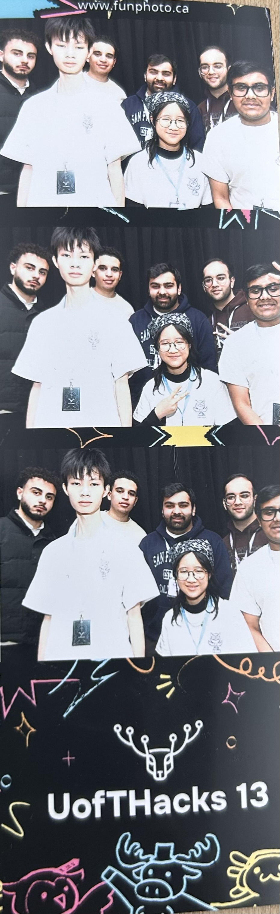

I had the incredible opportunity to serve as a mentor at UofT Hacks 2025, one of Canada's largest hackathons. This experience was both rewarding and inspiring as I got to work with passionate hackers and help bring their innovative ideas to life.
Throughout the hackathon, I had the privilege of helping 10+ hackers with their projects.
Mentoring at UofT Hacks was an amazing experience that allowed me to give back to the hackathon community while learning from the creative solutions that teams were building. It was inspiring to see the passion and dedication of the participants as they worked through the weekend to bring their ideas to life.
The hackathon environment was electric, with teams working around the clock to build innovative projects. Being able to help these hackers overcome technical challenges and see their projects come together was incredibly fulfilling.